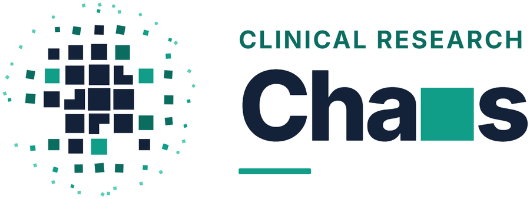

Clinical research methodology, made practical. Open funding calls and academic positions, checked on the official texts.
Open calls
Funding calls →
31 open calls worldwide · 12 open to Italian institutions
Open positions
Academic positions →
17 open PhD, post-doc and faculty positions